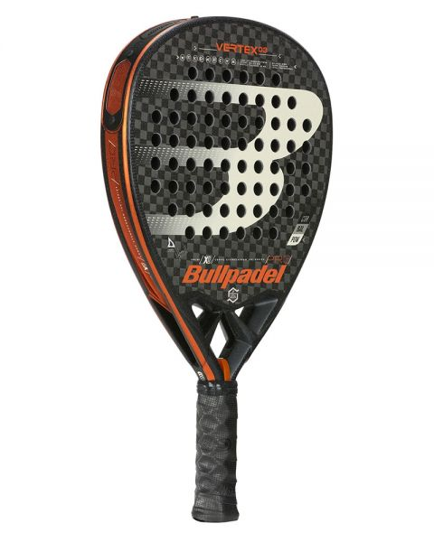
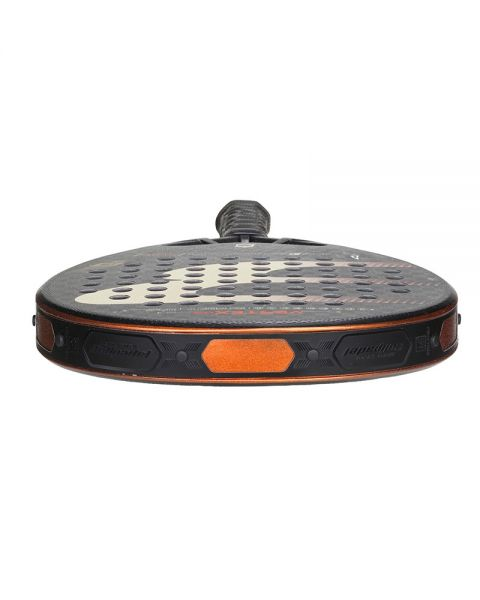
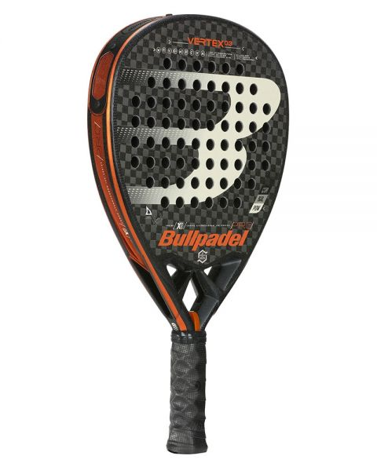
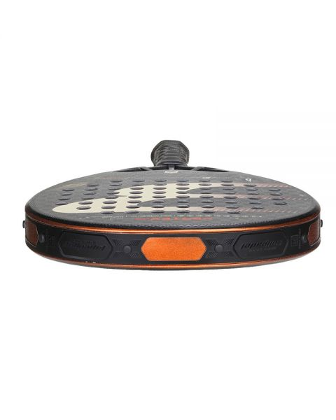

PADEL DON BOSCO
Bullpadel Hack 02 2021
Llega la nueva la Bullpadel Hack 2021, la pala de Paquito Navarro, una de las palas más esperadas de la reconocida marca española. Creada para ofrecer la máxima potencia en la pista. Confeccionada en forma híbrida, incorpora nuevas tecnologías y materiales para facilitar el ajuste al jugador, entre ellas destacamos dos novedades, el sistema Adaptia y sus canales Nerve, dos incorporaciones en la fabricación, con las que no cuenta el modelo Hack 02 2020.
Es pala esta ideada para jugadores de un nivel avanzado o profesional que busquen experimentar la máxima potencia sin perder control en la pista. Diseñada para un tipo de juego de ataque como el de Paquito Navarro, jugador top de World Padel Tour. La incorporación del su marco Metalshield que se adapta al novedoso sistema CustomWeigth permite adaptar el peso y balance de la pala a tus necesidades y juego.
Destacamos las 2 novedades respecto a su modelo anterior, por un lado la incorporación de canales Nerve en el lateral del marco, consiguiendo más rigidez y minimizando el peso para mayor control. Por otro lado su nuevo sistema Adaptia, solo incorporado en la gama pro, se trata de la combinación de un nuevo carbono inteligente Tricarbon y elastómeros de doble capa. Enlace oficial de compra
Bullpadel Vertex 03 2021
La novedad más clara que podemos ver en esta nueva Vertex 03, es el AIR REACT CHANNEL cuyo funcionamiento ya explicamos anteriormente, pero que nos resulta extraño al tacto cuando cogemos la pala con la mano no dominante.
Seguimos contando con el grip hesacore, el carbono XTend 12K, la goma MultiEVA y el marco Carbon Tube que año tras año da buenos resultados a la marca Española.
Este año se han decantado por unos colores más discretos en sus planos y en el corazón apostando por un color degradado de negro a gris plata para el logotipo de la marca. Enlace oficial de compra
 



Nox Luxury At10 Genius Arena
La nueva pala Nox Luxury At10 Genius Arena es la elegida por Agustin Tapia para la temporada de 2021. Cuenta con un diseño moderno y atrevido que aporta altas prestaciones en los partidos importantes de pádel. Entre las novedades de este modelo, se encuentra el Weight & balance System para personalizar el peso y balance, según las preferencias del jugador.
Con la aplicación de más cantidad de material desde el marco hasta cuatro centímetros dentro de la cara minimizamos la diferencia de dureza entre el marco y la cara. De este modo cuando se golpea la bola con las partes exteriores de la pala minimizamos el posible corte de las fibras que se podría producir al hundirse la goma. Enlace oficial de compra